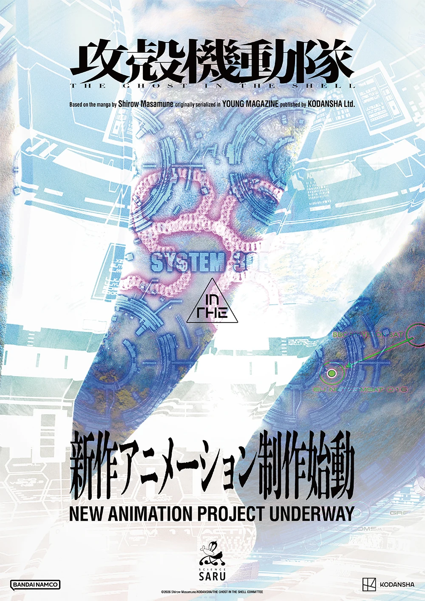

OLD MAN OTAKU / ANIME PRODUCTION
Science SARU Is Making Another Ghost in the Shell Animation Project
A fresh production has been announced following the 2026 television anime. Its format and release window are still under wraps.

Ghost in the Shell has another animation project in production, with Science SARU returning to handle the animation.
The franchise’s official October 23 announcement describes a new creative project following the television anime that began broadcasting and streaming in July 2026. This is a fresh announcement, not a recycled report about that earlier series.
The news was revealed through flyers at a press preview for the OPEN HOUSE event at Dover Street Market Ginza. The official site also released the teaser flyer visual.
Beyond the studio’s involvement, major details remain unannounced. There is no confirmed release window, format, or complete principal staff list. Calling this a television season or a theatrical film would go beyond the information available.
Why this is worth watching
RogueVerse analysis: Returning to an established property presents an interesting creative test. Its identity gives viewers a reason to pay attention, while a new production still needs to offer a perspective that feels worthwhile.
For Ghost in the Shell, that means the eventual story and visual approach deserve as much attention as the familiar title. A recognizable world can open the door; the work itself has to keep people there.
There is not enough information yet to assess how this project will relate to the 2026 show or which parts of Masamune Shirow’s work it might explore. The next meaningful updates will be its format, creative team, story, and schedule.
For now, production is confirmed. Everything beyond that should wait for the announcement—not become the announcement.
Copyright & image ownership
©2026 Shirow Masamune/KODANSHA/THE GHOST IN THE SHELL COMMITTEE. Image via the official anime website.
Third-party characters, artwork, titles, logos and trademarks belong to their respective rights holders. Images accompany editorial reporting and commentary; RogueVerse Studio claims no ownership of third-party IP and is not affiliated with or endorsed by its rights holders.
Article text and RogueVerse branding © 2026 RogueVerse Studio. All rights reserved.